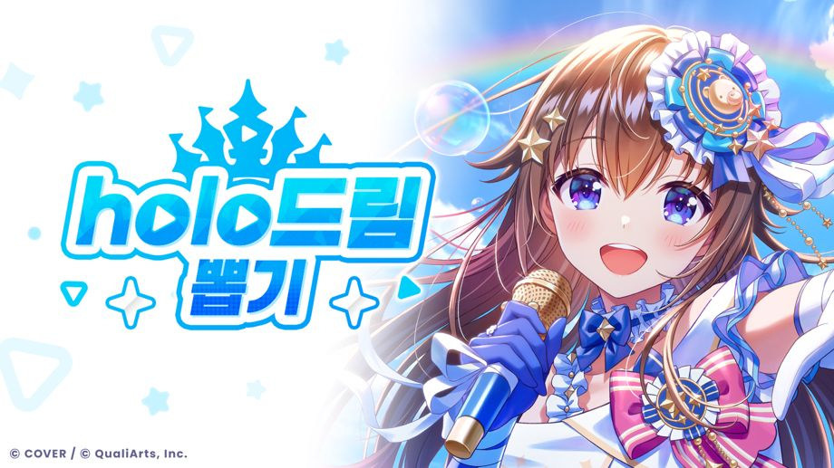

총 54명의 holo멤이 등장하는 「holo드림 뽑기」 개최!
◆개최 기간
서비스 개시~
Holo스티커 안내
「Holo스티커」는 개화 단계가 최대인 ★3, ★4 멤버를 새로 획득하면 입수할 수 있습니다.
또한, 보유 중인 뽑기 Pt를 유효 기한까지 사용하지 않아도 「Holo스티커」로 교환됩니다.
「Holo스티커」는 [상점]→[Holo스티커 교환]에서 다양한 아이템과 교환할 수 있습니다.
자세한 내용은 [도움말]→[상점]→[Holo스티커 교환 안내]를 확인해 주십시오.
특별 Holo스티커 안내
「특별 Holo스티커」는 ★5 멤버를 획득하면 입수할 수 있습니다.
또한, 개화 단계가 최대인 ★5 멤버를 획득하면 더 많은 「특별 Holo스티커」를 획득할 수 있습니다.
「특별 Holo스티커」는 [상점]→[특별 Holo스티커 교환]에서 다양한 아이템과 교환할 수 있습니다.
자세한 내용은 [도움말]→[상점]→[특별 Holo스티커 교환 안내]를 확인해 주십시오.
주의 사항
・개최 기간 및 내용은 예고 없이 변경될 수 있습니다.
・본 뽑기에 관한 주의 사항은 각 뽑기의 [뽑기 화면]→[뽑기 상세]→[주의 사항]을 확인해 주십시오.
・본 뽑기의 제공 내용은 각 뽑기의 [뽑기 화면]→[뽑기 상세]→[제공 확률]을 확인해 주십시오.